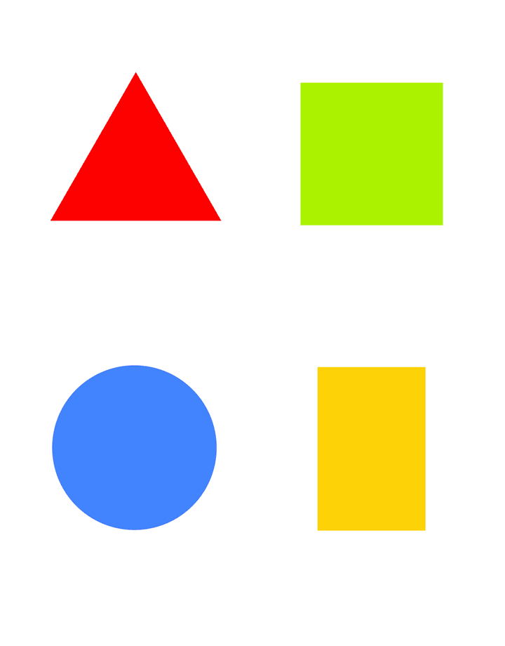

| Previous |  | Next |
The writer has basically only to write 3 idl files, first the
one that defines the common interface between the Sender and
Receiver , second the interface for the Sender and third the
interface for the Receiver. In this tutorial are that the IDL files
Hello_MyFoo_obj.idl, Hello_Sender_comp.idl and the
Hello_Receiver_comp.idl.
Naturally, it is possible that there are more IDL-files
to be used, as in this example the Hello_Common_defn.idl file for the common
definitions.
The Receiver component ('server') has no idea which component (AMI connector or Sender) uses his interface.
The Connector, the AMI-Component, will be generated by the IDL compiler by implying ami4ccm.idl
In the Sender executor the handling of the AMI callbacks and also the asynchronous and synchronous invocations must be coded.
The Sender component of this Hello tutorial invokes some asynchronous methods and some synchronous methods. For asynchronous invocations, the Sender component uses the AMI4CCM_MyFoo_obj interface of the AMI component and provides the AMI4CCM_MyFoo_objReplyHandler interface to the AMI component.
For synchronous invocations, the Sender component uses the MyFoo_obj interface (which the Receiver provides).
The receiver just implements the interface provided by the application programmer. The Receiver should have no idea which component (in this case Sender or AMI) uses his interface!
Sender_comp_exec.cpp
In de ccm_activate method, first retrieve the
receptacles:
Asynchronous:::Hello::AMI4CCM_MyFoo_obj_var asynch_foo =this->context_->
get_connection_sendc_run_my_foo();
Synchronous:
::Hello::MyFoo_obj_var synch_foo = this->context_->get_connection_run_my_foo ();
After retrieving the receptacles, make the desired
asynchronus and synchronous invocations.
The asynchronous methods have the prefix sendc_. The first
argument is the Reply handler.
my_foo_ami_->sendc_foo (new MyFoo_obj_callback_exec_i (), "Do something
asynchronous");
The same synchronous method:
CORBA::Long result = my_foo_ami_->foo("Do something synchronous", out_str.out());
For the asynchronus methods the implied Reply Handler interface for each method must be coded.
Example foo callback:
void
MyFoo_obj_callback_exec_i::foo (::CORBA::Long
ami_return_val, const char * answer)
{
/*Your code here. */
ACE_DEBUG
((LM_DEBUG,
ACE_TEXT("Sender:\tMyFoo AMI Callback from
foo:");
ACE_TEXT("result <%u> answer
<%C>\n"),
ami_return_val,answer));
}
void
MyFoo_obj_callback_exec_i::foo_excep (::CCM_AMI::ExceptionHolder * excep_holder)
{
/* Your code here. */
}
Receiver_comp_exec.cpp
In this file the interface methods must be programmed.
Example foo method:
::CORBA::Long MyFoo_obj_exec_i::foo (const char * in_str, ::CORBA::String_out answer)
{
/* Your code here. */
answer = CORBA::string_dup ("This is my answer : Hi");
return ACE_OS::rand () % 100;
}
| Previous | Next |